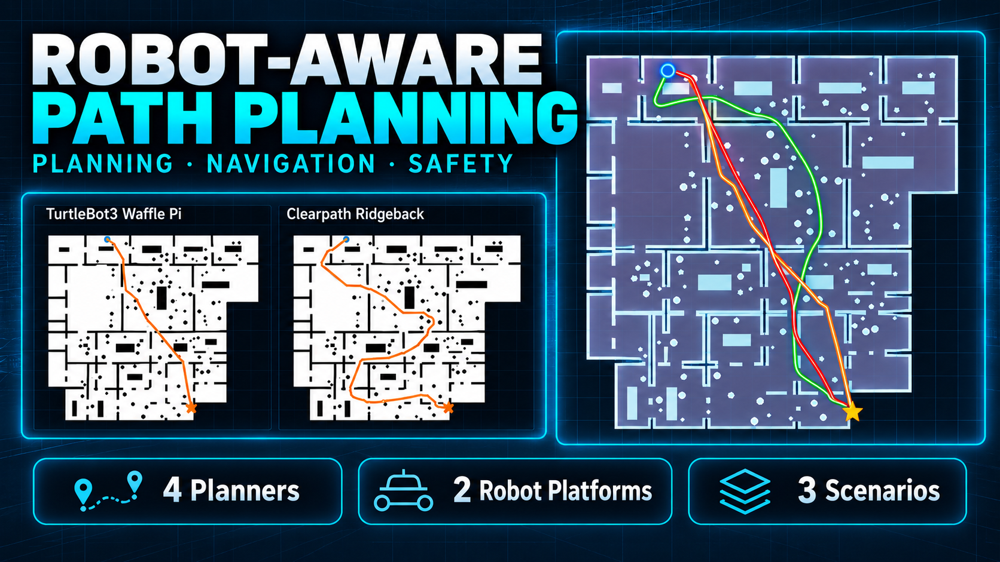

Planning · NavigationCompleted
Robot-Aware Path Planning Benchmark
A controlled benchmark that distinguishes search-algorithm behavior from robot-specific feasibility. Dijkstra, A*, RRT, and RRT* are evaluated across discrete and metric environments, then connected to footprint inflation, continuous clearance, stochastic convergence, trajectory refinement, proximity-aware velocity regulation, and mission-level execution.
4 planners2 robot platforms3 scenarios10 stochastic seeds